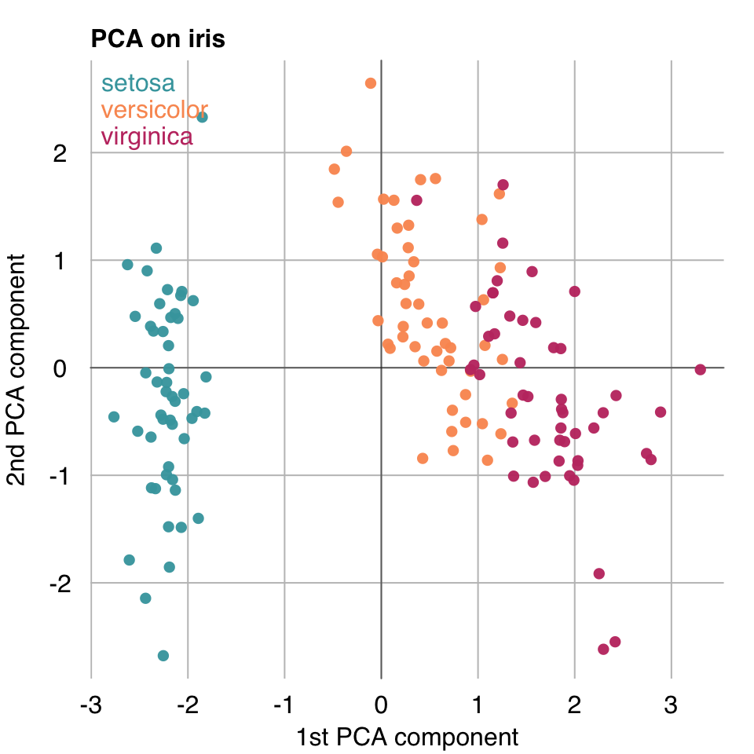
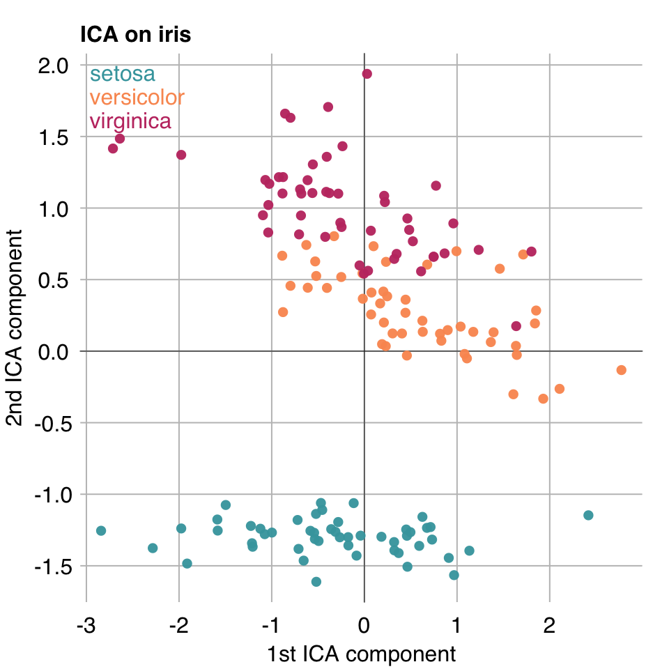
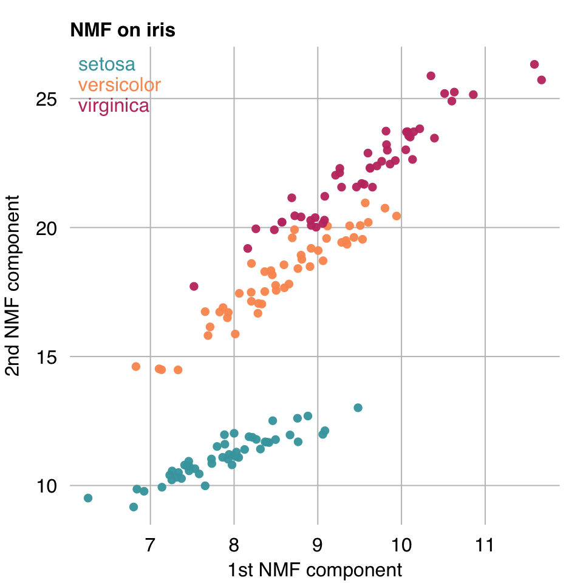
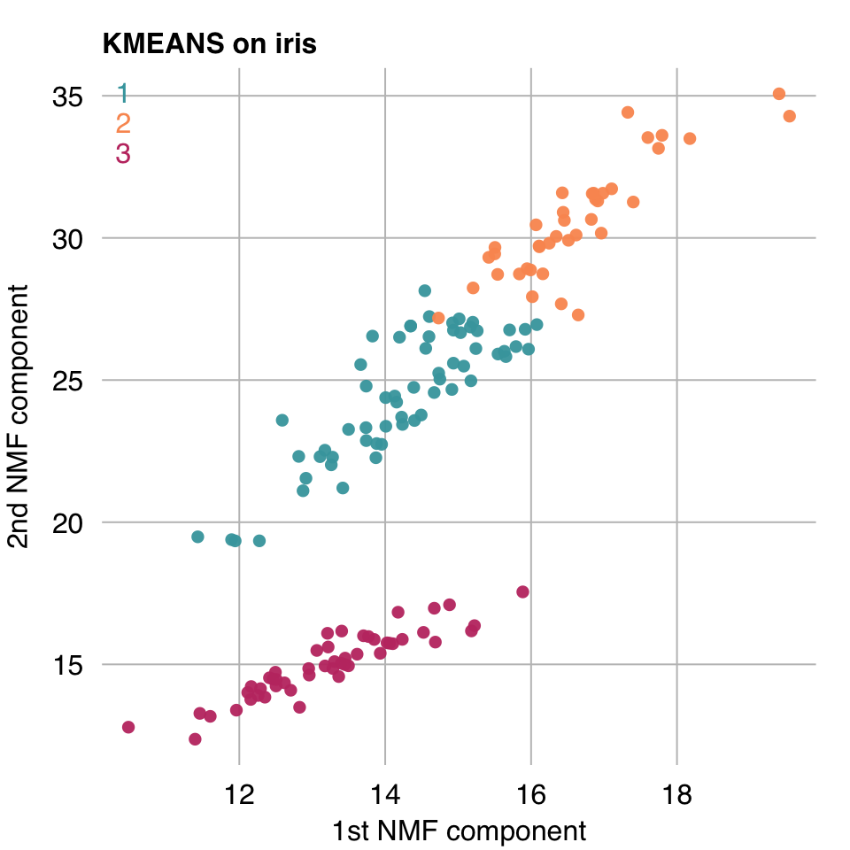
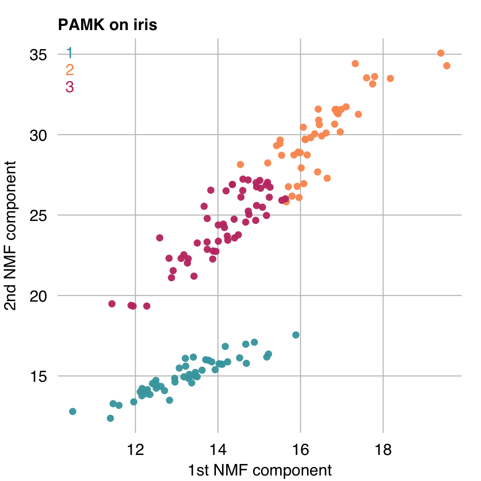

50 Unsupervised Learning
Unsupervised learning aims to learn relationships within a dataset without focusing at a particular outcome. You will often hear of unsupervised learning being performed on unlabeled data. To be clear, it means it does not use the labels to guide learning - whether labels are available or not. You might, for example, perform unsupervised learning ahead of supervised learning as we shall see later. Unsupervised learning includes a number of approaches, most of which can be divided into two categories:
- Clustering: Cases are grouped together based on some derived measure of similarity / distance metric.
- Dimensionality Reduction / Matrix decomposition: Variables are combined / projected into a lower dimensional space.
In rtemis, clustering algorithms begin with c_ and decomposition/dimensionality reduction algorithms begin with d_
50.1 Decomposition / Dimensionality Reduction
Use decomSelect() to get a listing of available decomposition algorithms:
decomSelect().:decomSelect
rtemis supports the following decomposition algorithms:
Name Description
H2OAE H2O Autoencoder
H2OGLRM H2O Generalized Low-Rank Model
ICA Independent Component Analysis
Isomap Isomap
KPCA Kernel Principal Component Analysis
LLE Locally Linear Embedding
MDS Multidimensional Scaling
NMF Non-negative Matrix Factorization
PCA Principal Component Analysis
SPCA Sparse Principal Component Analysis
SVD Singular Value Decomposition
TSNE t-distributed Stochastic Neighbor Embedding
UMAP Uniform Manifold Approximation and ProjectionWe can further divide decomposition algorithms into linear (e.g. PCA, ICA, NMF) and nonlinear dimensionality reduction, (also called manifold learning, like LLE and tSNE).
50.1.1 Principal Component Analysis (PCA)
x <- iris[, 1:4]
iris_PCA <- d_PCA(x)09-26-23 23:03:17 Hello, egenn [d_PCA]
09-26-23 23:03:17 ||| Input has dimensions 150 rows by 4 columns, [d_PCA]
09-26-23 23:03:17 interpreted as 150 cases with 4 features. [d_PCA]
09-26-23 23:03:17 Performing Principal Component Analysis... [d_PCA]
09-26-23 23:03:17 Completed in 8.3e-05 minutes (Real: 0.01; User: 3e-03; System: 1e-03) [d_PCA]
mplot3_xy(iris_PCA$projections.train[, 1],
iris_PCA$projections.train[, 2],
group = iris$Species,
xlab = "1st PCA component",
ylab = "2nd PCA component",
main = "PCA on iris")
50.1.2 Independent Component Analysis (ICA)
iris_ICA <- d_ICA(x, k = 2)09-26-23 23:03:17 Hello, egenn [d_ICA]
09-26-23 23:03:17 ||| Input has dimensions 150 rows by 4 columns, [d_ICA]
09-26-23 23:03:17 interpreted as 150 cases with 4 features. [d_ICA]
09-26-23 23:03:17 Running Independent Component Analysis... [d_ICA]
09-26-23 23:03:17 Completed in 6e-04 minutes (Real: 0.04; User: 2e-03; System: 1e-03) [d_ICA]
mplot3_xy(iris_ICA$projections.train[, 1],
iris_ICA$projections.train[, 2],
group = iris$Species,
xlab = "1st ICA component",
ylab = "2nd ICA component",
main = "ICA on iris")
50.1.3 Non-negative Matrix Factorization (NMF)
iris_NMF <- d_NMF(x, k = 2)09-26-23 23:03:17 Hello, egenn [d_NMF]
09-26-23 23:03:18 ||| Input has dimensions 150 rows by 4 columns, [d_NMF]
09-26-23 23:03:18 interpreted as 150 cases with 4 features. [d_NMF]
09-26-23 23:03:18 Running Non-negative Matrix Factorization... [d_NMF]
09-26-23 23:03:18 Completed in 0.02 minutes (Real: 1.04; User: 0.73; System: 0.04) [d_NMF]
mplot3_xy(iris_NMF$projections.train[, 1],
iris_NMF$projections.train[, 2],
group = iris$Species,
xlab = "1st NMF component",
ylab = "2nd NMF component",
main = "NMF on iris")
50.2 Clustering
Use clustSelect() to get a listing of available clustering algorithms:
clustSelect().:clustSelect
rtemis supports the following clustering algorithms:
Name Description
CMeans Fuzzy C-means Clustering
DBSCAN Density-based spatial clustering of applications with noise
EMC Expectation Maximization Clustering
HARDCL Hard Competitive Learning
HOPACH Hierarchical Ordered Partitioning And Collapsing Hybrid
H2OKMeans H2O K-Means Clustering
KMeans K-Means Clustering
MeanShift Mean Shift Clustering
NGAS Neural Gas Clustering
PAM Partitioning Around Medoids
PAMK Partitioning Around Medoids with k estimation
SPEC Spectral ClusteringLet’s cluster iris and we shall also use an NMF decomposition as we saw above to project to 2 dimensions.
We’ll use two of the most popular clustering algorithms, K-means and PAM, aka K-medoids.
x <- iris[, 1:4]
iris_NMF <- d_NMF(x, k = 2)09-26-23 23:03:18 Hello, egenn [d_NMF]
09-26-23 23:03:18 ||| Input has dimensions 150 rows by 4 columns, [d_NMF]
09-26-23 23:03:18 interpreted as 150 cases with 4 features. [d_NMF]
09-26-23 23:03:18 Running Non-negative Matrix Factorization... [d_NMF]
09-26-23 23:03:19 Completed in 4.4e-03 minutes (Real: 0.26; User: 0.26; System: 0.01) [d_NMF]
50.2.1 K-Means
iris.KMEANS <- c_KMeans(x, k = 3)09-26-23 23:03:19 Hello, egenn [c_KMeans]
09-26-23 23:03:19 Performing K-means Clustering with k = 3... [c_KMeans]
09-26-23 23:03:19 Completed in 2e-03 minutes (Real: 0.12; User: 0.09; System: 0.01) [c_KMeans]
mplot3_xy(iris_NMF$projections.train[, 1], iris_NMF$projections.train[, 2],
group = iris.KMEANS$clusters.train,
xlab = "1st NMF component",
ylab = "2nd NMF component",
main = "KMEANS on iris")
50.2.2 Partitioning Around Medoids with k estimation (PAMK)
iris_PAMK <- c_PAMK(x, krange = 3:10)09-26-23 23:03:19 Hello, egenn [c_PAMK]
09-26-23 23:03:19 Partitioning Around Medoids... [c_PAMK]
09-26-23 23:03:19 Estimated optimal number of clusters: 3 [c_PAMK]
09-26-23 23:03:19 Completed in 0.01 minutes (Real: 0.56; User: 0.39; System: 0.02) [c_PAMK]
mplot3_xy(iris_NMF$projections.train[, 1], iris_NMF$projections.train[, 2],
group = iris_PAMK$clusters.train,
xlab = "1st NMF component",
ylab = "2nd NMF component",
main = "PAMK on iris")